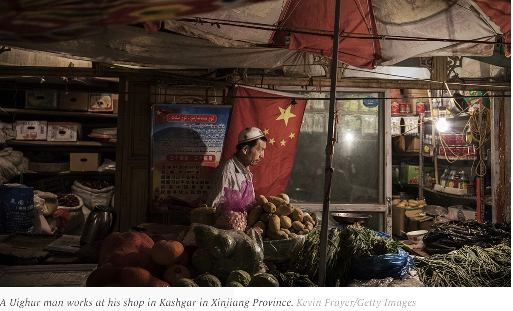
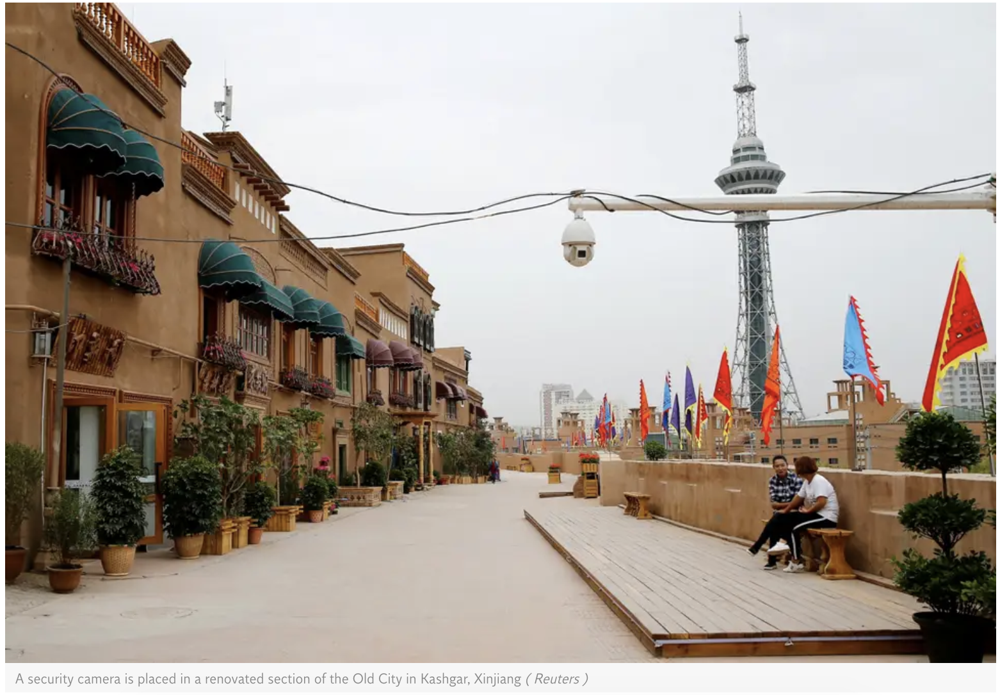
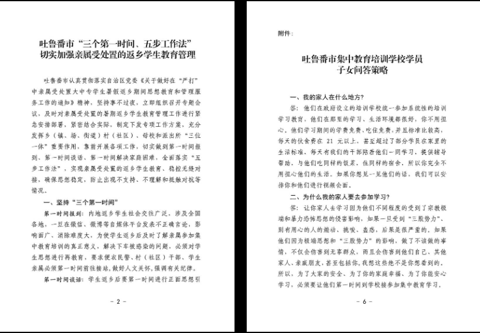

About
It is reported that there are over 1 million Uighur Muslims in China are in detention camps. These camps are called “re education camps” but the nature of these camps are more akin to that of concentration camps. Violence, repression and other forms are abuse are used to prevent Muslims from practicing their faith. Any religious act is considered extremist and punishable by law, which involves sending people to camps and forcinging them to renounce their religion. As a result of these circumstances, families have been torn apart, and children are put in orphanages with nowhere to go. Detainees are monitered and forced to eat pork, drink alcohol and renounce Islam.
While there is limited information and the government denying claims of abuse, but former detainees who escaped China, described the inhumane, prison-like conditions. There have been several counts of tourture, sexual abuse, in addition to having their freedom stolen from them. In 2020, these actions can’t be considered any less than criminal.
While there is limited information and the government denying claims of abuse, but former detainees who escaped China, described the inhumane, prison-like conditions. There have been several counts of tourture, sexual abuse, in addition to having their freedom stolen from them. In 2020, these actions can’t be considered any less than criminal.
In recent news:
- Authorities send men to sleep in the same beds as women whose husbands are in prison camps.
- Muslims organs are being harvested and sold
- Forced abortions/marriages
- Physical torture/sexual torture
- Mosques, the Muslim houses of worship, have been destroyed.
Why do we have such a lack of information?
Speaking about this matter is very dangerous. Journalists face threats, violence and risk prison if they report information that would put China under a bad light. Social media is restricted. There are even cases of people who speak up about China, who have been censored. As a result, spreading information is very risky and is very difficult to do.
What Can We Do?
WE NEED TO BE AWARE
History is yet again repeating itself, but we have to make sure that we keep aware of what is happening around us. Spreading information about the mass incarceration of Uighur Muslims and creating global empathy will give a voice to the Uighur muslims who no longer have one. There are an alarming number of coutries that are even praising China for their reprehensible actions. As difficult as it is to read about the heart breaking reality, we must not ignore the innocent people and their pain.
Resources

"What is happening with the Uighurs in China?"

"China’s Repression of Uighurs in Xinjiang"

"Data leak reveals how China 'brainwashes' Uighurs in prison camps"
"China is harvesting thousands of human organs from its Uighur Muslim minority, UN human-rights body hears"

"China races to destroy records after leaks reveal information on Uighur Muslim detention camps"
